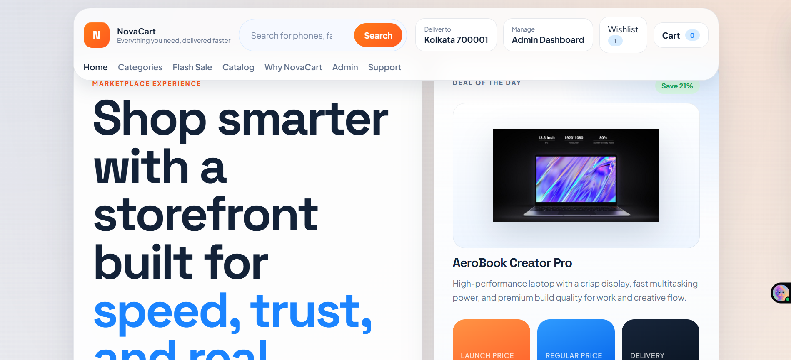

Frontend Developer | UI Builder | Fast Learner
I build clean, interactive web experiences that feel confident on first look.
I'm Swastik Das, a developer focused on responsive websites, practical JavaScript, and polished user interfaces. I enjoy turning ideas into layouts that look sharp, move smoothly, and stay usable across devices.
About Me
What I bring to a project
I like building websites that balance visual energy with clear structure. My workflow is centered around clean code, responsive design, and steady iteration until a page feels finished instead of just functional.
My approach
I learn best by building. Recreating familiar interfaces, improving small interactions, and experimenting with layout gives me a deeper understanding of how strong frontend work actually feels in practice.
I care about spacing, hierarchy, hover states, motion, and the small details that make a portfolio feel personal instead of generic.
What I'm actively developing
- Responsive landing pages and personal websites
- JavaScript-driven components and smooth UI behavior
- React-based interfaces and reusable thinking
- Practical backend foundations with Node.js and Python
How I like to work
Design-aware
Layouts should feel intentional, not randomly assembled.
Responsive-first
Desktop and mobile should both feel planned from the start.
Always improving
Each project is a chance to push polish a little further.
Skills
Tools I use to shape the web
These are the technologies I'm currently using and strengthening through hands-on projects.
HTML5
Semantic structure, accessible content flow, and clean markup.
CSS3
Responsive layout systems, visual polish, and animated detail.

JavaScript
DOM interaction, dynamic behavior, sliders, and UI logic.
React
Component-based thinking and modern frontend architecture.
Node.js
Backend basics, tooling, and practical full-stack growth.

Python
Problem solving, scripting, and exploring broader development.

Java
Foundations in structured programming and object-oriented logic.
Projects
Work that reflects how I think
A few project directions that show my interest in product-style interfaces, practical frontend builds, and continuous improvement.

Personal Brand
Cinematic Portfolio Resume
A personal website concept with stronger storytelling, layered visuals, responsive sections, and smoother interactions across the page.
Video Hero
Responsive UI
JavaScript
Learning by Building
Interactive Web Experiments
A growing collection of smaller frontend ideas that help me improve component behavior, motion, responsiveness, and visual consistency.
React
Node
UI Practice
Contact
Let's build something better than average.
I'm interested in opportunities where I can keep improving as a developer while contributing thoughtful UI work, strong effort, and a real willingness to learn quickly.
Open to internships
Frontend collaborations
Portfolio projects